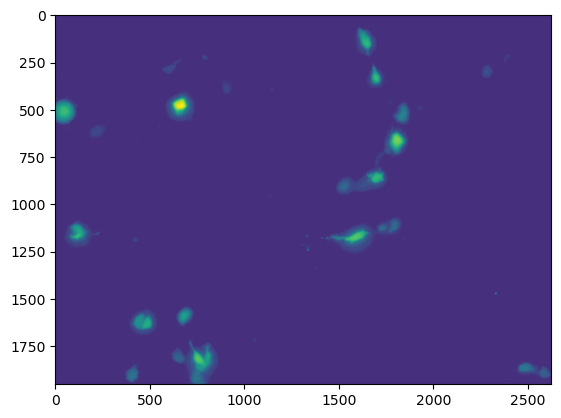
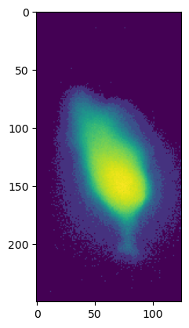
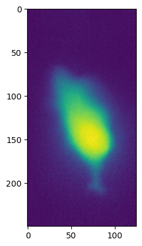
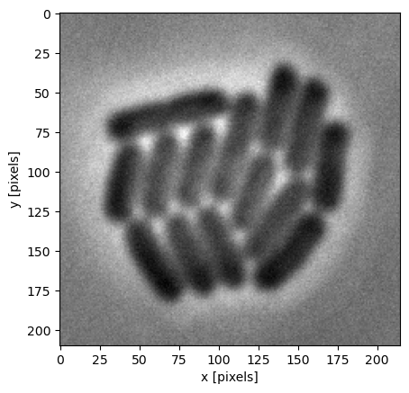
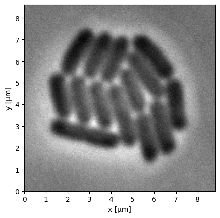
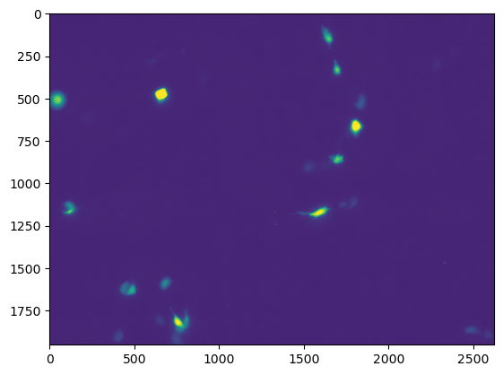
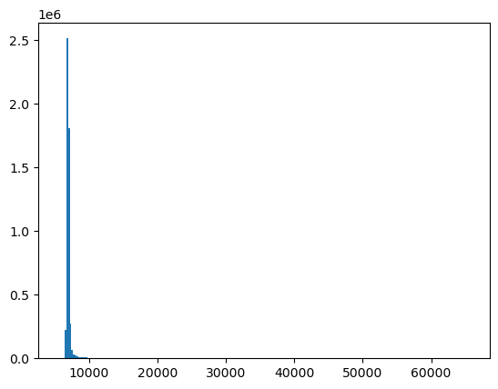

import matplotlib.pyplot as plt
import seaborn as sns
import tifffile as tiff
import numpy as npWorkshop Python Image Analysis
Martijn Wehrens, September 2025
Estimated time: 20 mins presenting
Chapter 3: Storing data, the nitty gritty
Data types determine what information can be stored
Types of data
Multiple data types exist. There are three important distinctions between these types: - The bit-depth; - Determines how many values can be stored, e.g. 0-255 values for a bit depth of 8 (unsigned). - More depth takes more disk space. - Relevance: especially when generating large amounts of images, a trade-off between storage requirements and value range becomes important. Typically, you’ll use 8-bit or 16-bit images. - Signed or unsigned; - Whether negative values can be stored. - Relevance: usually only positive numbers are used in images, so you won’t see the ‘signed’ format often.
- Integer vs. Floating Point; - Integer can only store whole numbers. - Floating Point is a technically more complicated format, which can store (very large and very small) numbers with a decimal point, such as 2.0005, 3.14159, 100023.93, et cetera. - Relevance: Floating point images are often used in intermediate steps of image processing, but are rarely used for storing raw images.
The table below summarizes common image data formats. In practice, uint8 and uint16 are used most frequently.
| Type | Bit-depth | dtype | Values |
|---|---|---|---|
| Unsigned integer | 8 | uint8 |
0 to 255 |
| Signed integer | 8 | int8 |
-128 to 127 |
| Unsigned integer | 16 | uint16 |
0 to 65535 |
| Signed integer | 16 | int16 |
-32768 to 32767 |
| Unsigned integer | 32 | uint32 |
0 to 4,294,967,295 |
| Signed integer | 32 | int32 |
-2,147,483,648 to 2,147,483,647 |
| Floating point | 32 | float32 |
-3.4E+38 to 3.4E+38 * |
| Floating point | 64 | float64 |
** |
Difference between 8-bit and 16-bit sometimes important
# Load a picture of fluorescently labeled HeLa cells (8 bit)
img_path8bit = 'images/biological/exampleHeLa-8bit.tif'
img_HeLa_8bit = tiff.imread(img_path8bit)
# Display information about the image
print('The type of this image is: ', img_HeLa_8bit.dtype)
print('uint16 has ', 2**8, ' possible values')
# Show the image
_ = plt.imshow(np.log(img_HeLa_8bit+1), cmap='viridis')The type of this image is: uint8
uint16 has 256 possible values
_ = plt.imshow(np.log(img_HeLa_8bit[0:250,1575:1700]+1),
cmap='viridis')
# Load a picture of fluorescently labeled HeLa cells
img_path = 'images/biological/exampleHeLa.tif'
img_HeLa = tiff.imread(img_path)
# Display information about the image
print('The type of this image is: ', img_HeLa.dtype)
print('uint16 has ', 2**16, ' possible values')
_ = plt.imshow(np.log(img_HeLa[0:250,1575:1700]+1),
cmap='viridis')The type of this image is: uint16
uint16 has 65536 possible values
Take home messages
When acquiring data:
- Decide the relevant biological range and amount of detail within that range that you need.
- Make sure the file format you save to allows for that range and level of detail.
- Histograms can help during that assessment.
Generally, opt for the uint16 format and save your images as .tif to prevent losses.
Other pitfalls:
- Saturated pixels:
- Occurs when your real signal falls outside your file format range.
- Values higher than the maximum value will collapse to the maximum.
- Example: Say you measure a photon count of 466, but your storage range is 0-255, then the value 466 will be stored as 255. Information is lost.
- Saturated pixels:
Let’s get real (size)
# Example image
img = tiff.imread('images/biological/microcolony_ecoli.tif')
plt.imshow(img, cmap="gray")
plt.xlabel('x [pixels]'); plt.ylabel('y [pixels]')Text(0, 0.5, 'y [pixels]')
# Luckily, we know the size of a pixel
pixel_size = 0.041 # µm per pixel
# In many modern setups, this is stored in the metadata
# E.g. FIJI > Image > Show Info
# Get the number of pixels per dimension
nx = img.shape[1]
ny = img.shape[0]
# Define extent: [xmin, xmax, ymin, ymax]
extent = [0, nx * pixel_size, 0, ny * pixel_size]
# Make the plot
plt.imshow(img, extent=extent, origin="lower", cmap="gray")
plt.xlabel("x [µm]")
plt.ylabel("y [µm]")
plt.show()
# This is a particular example, but determining lengths
# or areas can often be relevant, in which case you
# need to know the pixel size.
Not sure yet below sections are useful
Statistics
# Image statistics
print('Mean: ',img_HeLa.mean())
print('Min: ', img_HeLa.min())
print('Max: ', img_HeLa.max())
print('Standard dev: ', img_HeLa.std())
# Now the mode and percentiles
print('Mode: ', np.bincount(img_HeLa.ravel()).argmax())
print('5th percentile: ', np.percentile(img_HeLa, 5))
print('95th percentile: ', np.percentile(img_HeLa, 95))Mean: 430.6844697667808
Min: 324
Max: 14822
Standard dev: 277.61160166795554
Mode: 403
5th percentile: 393.0
95th percentile: 441.0# For further image processing we could remove outliers from the image
new_max = np.percentile(img_HeLa, 99.9)
print('New maximum determined at: ', new_max)
img_HeLa_norm = img_HeLa.copy()
img_HeLa_norm[img_HeLa_norm > new_max] = new_max
img_HeLa_norm = (img_HeLa_norm / new_max) * 2**16
# Show the result
_ = plt.imshow(img_HeLa_norm, cmap='viridis', vmin=0, vmax=2**16)
# Don't throw away your raw images!
# If you save modified images like this, create a copy.New maximum determined at: 3817.0
_ = plt.hist(img_HeLa_norm.ravel(), bins=256)